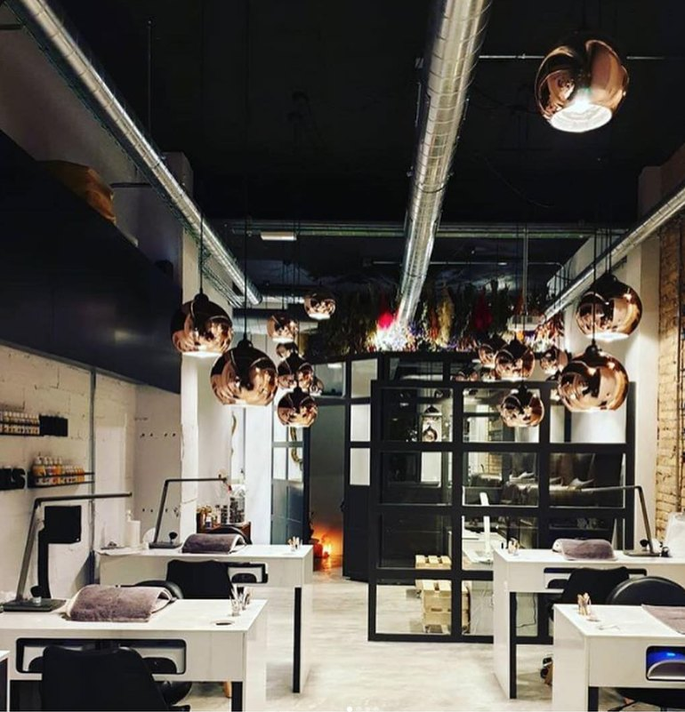
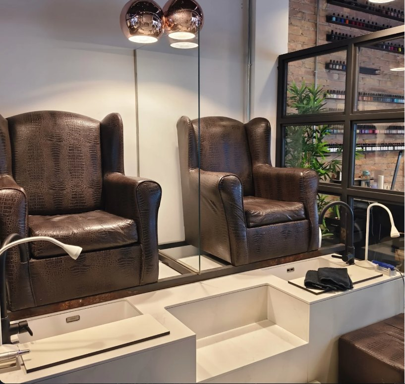
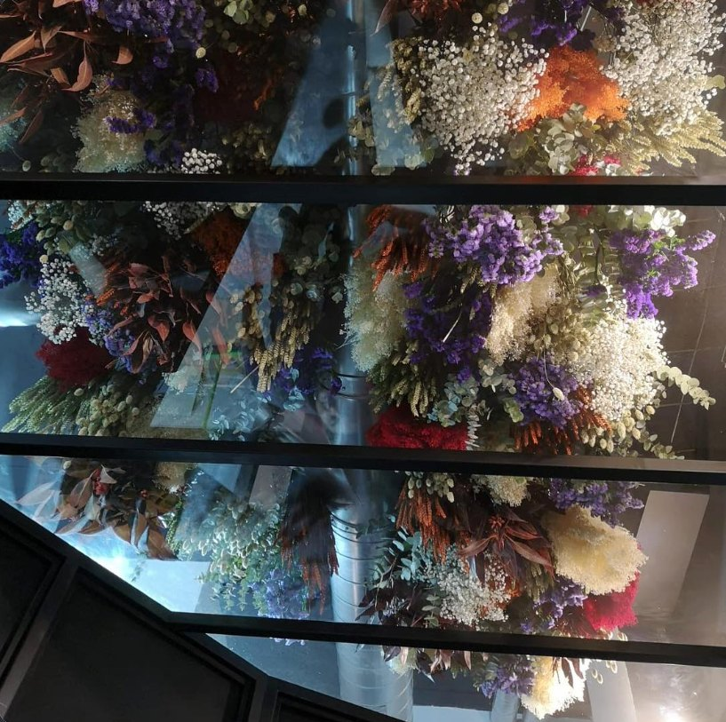
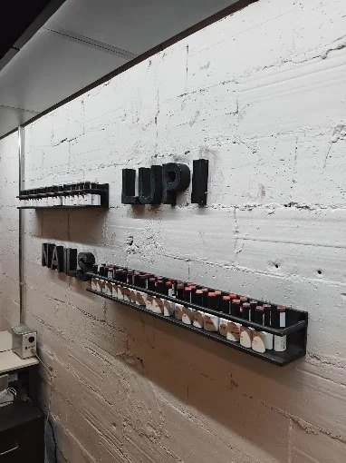
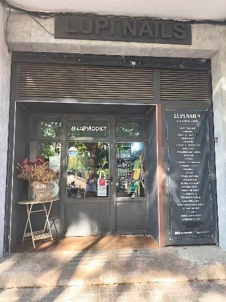
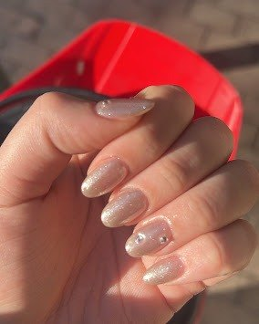
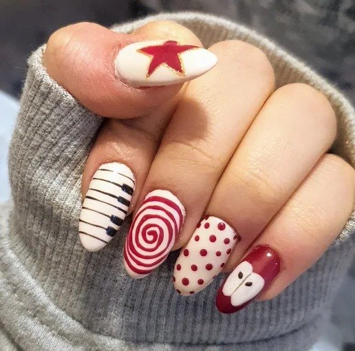
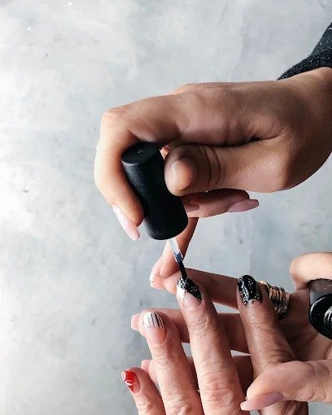
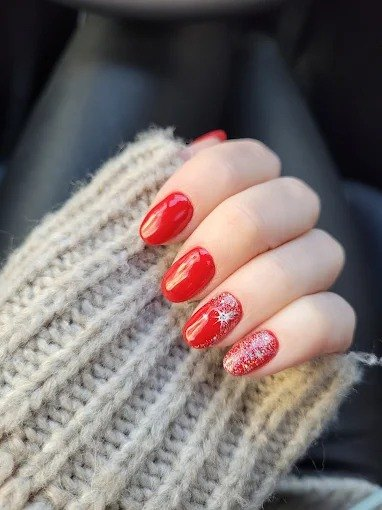

¿Tradicional, semipermanente o Shellac?
Cada una dura distinto y cuida la uña a su manera. Te lo contamos en cinco pantallas.
Desliza →Maqueta Mimmic · textos y precios provisionales
Lupi Nails · Sant Just Desvern
Te escuchamos y nos tomamos el tiempo que haga falta.
Elige el tipo, toca un color y míralo puesto. Enséñaselo a Andrea al reservar. catálogo de muestra
Opiniones
«Texto de una reseña real sobre el trato y el resultado.»Nombre · mes 2026
Dónde estamos
| Lunes | 9:30–17:00 |
| Martes a viernes | 9:30–19:00 |
| Sábado | 9:30–14:00 |
| Domingo | Cerrado |





Te ayudamos a escoger
Una idea por pantalla. Desliza y quédate con la que se adapte a ti.
Cada una dura distinto y cuida la uña a su manera. Te lo contamos en cinco pantallas.
Desliza →Para ti, que cambias de color cada semana.
Para ti, que quieres olvidarte de las uñas unas semanas.
Para ti, que quieres color y cuidar tu uña natural.
Para ti, que sabes lo que le va bien a tus uñas.
Para ti, que quieres saber lo que pagas.
El precio de Booksy es el que pagas. No cobramos ningún extra.
Servicios
Precios de Booksy. Elige el servicio, el día y la hora, y te llega la confirmación al móvil.
Pies
En sillones de piel, con agua caliente y una hora solo para ti. También en pack con manicura.
Reservar en Booksy →Estética y masajes
Una cabina aparte, con la luz baja, para desconectar de verdad.
Reservar en Booksy →Todo incluido, sin extras. La retirada, la nivelación y la crema hidratante van siempre en el precio.
Servicios desde 6 € hasta 85 €. La lista completa y actualizada está en Booksy. qué incluye cada servicio: texto de muestra
Nail art
Pintado a mano alzada, con pincel. Para cada día, para una ocasión o porque hoy te apetece.




Reserva en Booksy en un minuto: eliges servicio, día y hora, y te llega la confirmación al móvil.